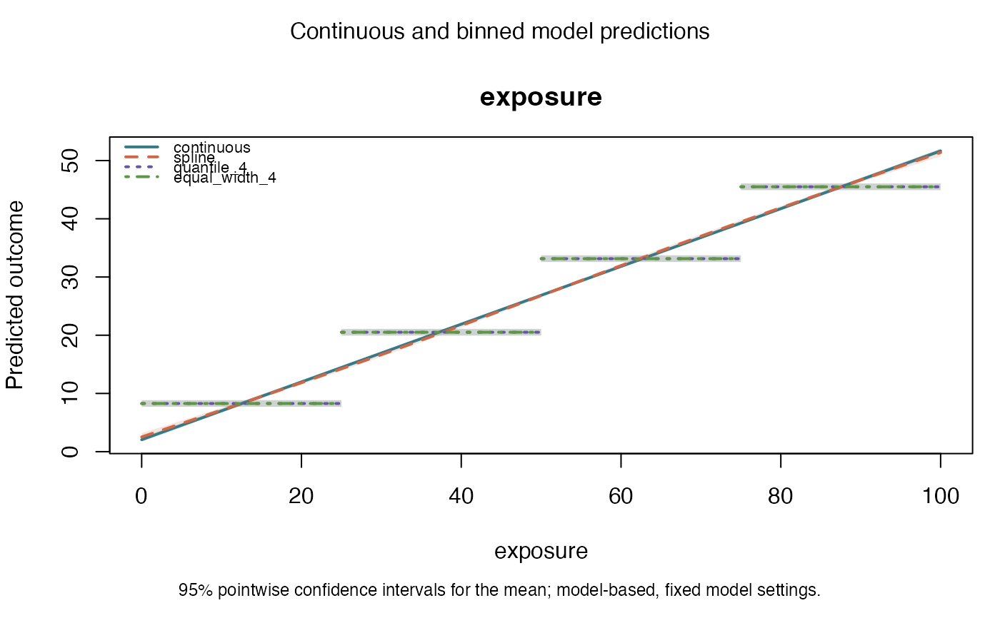

Compare Continuous and Binned Predictors in Regression Models
bin_interact.RdFit a continuous benchmark and explicitly chosen binned alternatives on one common sample. Compare conditional predictions, model fit, and bin support with an optional two-variable interaction. A plain-language assessment describes the fitted comparisons without selecting a best scheme.
Arguments
- data
A data frame. It is not modified.
- outcome
One quoted name of a plain numeric or integer outcome column. For logit, the common sample must contain both 0 and 1 and no other outcome values.
- variables
One or two distinct quoted names of plain numeric focal columns. The first is the horizontal axis in default plots. The second, when present, supplies the conditioning values for plot panels. Signed values are supported.
- schemes
A named list of candidates, or a
bin_comparisonwhose diagnoses become candidates. Each candidate is either onebin_diagnosisor a named list mapping one or both focal variables to diagnoses. Every diagnosis must name the variable to which it applies. Unspecified focal variables remain continuous. Use an empty list to compare only the linear and spline models whenspline_dfis supplied. Names must be unique and nonempty;"continuous"is reserved.- interaction
With two focal variables, TRUE includes both main effects and their product in every model. FALSE includes additive main effects only. Defaults to TRUE for two variables and FALSE for one.
- model
"linear"fits ordinary least squares withstats::lm."logit"fits a binary logistic model withstats::glm.- controls
Optional quoted names of distinct additive controls, separate from the outcome and focal variables. Plain numeric, factor, character, and logical columns are supported. Categorical controls become unordered factors. Use factors when numeric codes represent categories. No automatic transformations are applied. NULL or
character(0)means no controls.- min_count
Flag binned groups or combinations with fewer observations than this nonnegative integer. Default 20. This is a descriptive count screen.
- warn
Warn if model inputs exclude rows or a fit is flagged or fails. Stored diagnostics remain available with FALSE. Invalid specifications error.
- spline_df
NULL (default) preserves the original comparison. An integer of at least 2 adds a natural cubic spline comparator named
spline, with that many degrees of freedom for each focal variable. That name is then reserved. Three is a modest starting choice, not a universally optimal value. Controls retain their original additive form. The same value is used for both focal variables; when interaction is TRUE, all products of their spline basis terms are included along with their main effects.- level
Confidence level strictly between 0 and 1. Default 0.95. Used for stored predictions and as the default for later predictions and plots.
Details
Assessment. The printed assessment and $assessment describe the
common sample, continuous benchmark's end-to-end prediction changes at the
displayed moderator values, each candidate's AIC/BIC and training-score changes,
largest absolute paired prediction difference on the default grid, and group
support. Logit prediction changes are expressed in percentage points, while
linear-model changes use outcome units. Locations of maximum differences use
the first tied grid location. These maxima depend on the grid and fixed controls;
they are not whole-sample averages or maxima over every possible covariate value.
The assessment uses no dataset-specific knowledge, significance test, threshold
for practical importance, or automatic choice of bins. AIC and BIC comparisons
account for model complexity within the same family, outcome, and sample.
Differences smaller than 1e-8 in absolute magnitude are described as effectively
unchanged for display. Unavailable fits and metrics are identified explicitly.
Lower information criteria alone do not establish a real threshold or improvement
over a flexible continuous model. The assessment is stored at creation time;
rerun bin_interact after changing inputs rather than editing the result.
Common observations and fixed schemes. Rows with missing model inputs
or nonfinite numeric model inputs are excluded once, using all specified columns.
Every model uses the remaining rows and the same outcome. bin_apply
assigns categories using the saved cutpoints and zero rule. A scheme that fails
to cover any finite focal value in the common sample stops the call. Schemes
cannot silently select different samples, and their cutpoints are not recomputed.
Their original diagnostic counts may differ from the new estimation-sample counts.
The continuous benchmark uses linear terms on the model's link scale and their
product when requested. The optional spline model uses
splines::ns for each focal variable. Knots are learned from the common
estimation sample and stored in the fitted model for reuse in prediction.
Natural splines are linear beyond their boundary knots on the model link scale.
For two focal variables with an interaction and d degrees of freedom each,
the spline contributes 2d + d*d terms, plus an intercept and controls. Sparse
support or excessive complexity can make this model unstable or rank deficient;
failed fits are reported without silently reducing the degrees of freedom.
Spline complexity is prespecified, not selected using the outcome. A spline
smooths across zero and does not automatically supply a distinct zero state.
Factor interactions include all relevant main effects. The function accepts no
arbitrary formula terms, weights, offsets, or clustered covariance specification.
Ordinary model objects are retained for inspection. This draft does not reproduce
specialized fixed-effects estimators or the paper's clustered inference.
Model comparison. AIC and BIC are calculated within this common sample and outcome using the same model family. Delta AIC subtracts the continuous benchmark's AIC. Do not compare AIC between separate calls with different samples or outcomes. Parameter counts include fitted regression rank and, for linear models, the residual variance parameter. Training RMSE is the square root of mean squared outcome error. Training Brier score is mean squared probability error for the 0/1 outcome. These scores use the fitting data and are not cross-validation or evidence of out-of-sample improvement. Coefficients for continuous and categorical terms have different interpretations.
Fit problems. Failed, rank-deficient, nonconverged, numerically flagged, or separated fits are recorded rather than silently dropped. Their comparison metrics and predictions are withheld. Separation checks identify strictly separating fitted logit scores, pure-outcome categorical levels, and pure-outcome joint factor cells when the interaction supplies those cell terms. These are sufficient checks, not an exhaustive separation diagnostic. The absence of a flag does not establish stability. Nonfinite information criteria, such as an exact linear fit with zero residual variance, are set to NA; otherwise usable point predictions remain available in that case.
Support. Each binned candidate has a table of observed counts for its categories or category combinations, retaining empty cells. Logit tables also include events and non-events. With only one binned variable, these are marginal counts over the other variable. They do not establish joint support throughout a continuous predictor surface. No bin-support table is supplied for either fully continuous comparator. Counts describe rows, not independent units. Candidates with more than 10,000 possible bin combinations are rejected.
Default predictions. The first focal variable spans its observed range
on a 100-point grid augmented with candidate cutpoints and just-above-cutpoint
values. A second focal variable is fixed at its unique 25th, 50th, and 75th
percentiles. Numeric controls are held at medians; categorical controls at their
most frequent level, with ties resolved by factor level order. These values and
the full grid are returned. Every model is evaluated at the same original-unit
grid, then mapped to its own saved categories. Unsupported categories leave
predictions missing. These are conditional predictions, not average marginal
effects or causal effects. Pointwise confidence intervals for the mean are
included by default. They condition on the model and fixed cutpoints and do not
account for choosing bins after examining the data. See
predict.bin_interaction for assumptions. The grid can include sparse
or unsupported joint combinations even within each variable's observed range.
Use predict(result, newdata) to choose other covariate values.
Value
A bin_interaction list containing:
- comparison
One row per requested model, including the continuous benchmark. Columns are model, n, parameters, AIC, BIC, training_score, status, and delta_AIC. Status is ok, warning, or failed.
- spline_df, spline_formula, spline_details
Optional spline complexity, formula, and per-variable degrees of freedom, interior knots, boundary knots, and training count. NULL when no spline is requested.
- models
Named ordinary lm or glm objects; NULL when fitting fails.
- schemes
Saved candidate definitions, with empty specifications for the fully continuous comparators.
- issues
Named lists of diagnostic messages for each model.
- support
Binned-group count tables. Columns identify variable_1, bin_1, variable_2, bin_2, n, and sparse; logit adds events and non_events.
- sample
Original total and common-sample counts, original row positions used, and excluded row positions with the offending column names.
- analysis_data
The common-sample outcome and original predictors, before binning.
- grid
Default prediction data, moderator values, and fixed control values.
- predictions
Common-grid predictions, confidence limits, and differences. See
predict.bin_interactionfor columns.- level
The default confidence level.
- min_count
The count screen used for model-sample support tables.
- assessment
A character vector of plain-language interpretation, printed with the result. It describes comparisons and limitations without choosing bins.
- notes
Plain-language interpretation and limitations.
- call, outcome, variables, controls, interaction, model, formula, score_name
Call, settings, linear-term formula, and the training-score label.
Examples
data(binwise_smooth)
choices <- bin_compare(binwise_smooth, "exposure", bins = 4)
result <- bin_interact(binwise_smooth, "outcome", "exposure", choices, spline_df = 3)
result
#> binwise model comparison for outcome
#> Model linear ; interaction FALSE
#> outcome ~ exposure
#> <environment: base>
#> Spline comparator
#> outcome ~ splines::ns(exposure, df = 3L)
#> <environment: base>
#>
#> Assessment
#> * All models use the same 1000 observations; 0 rows were excluded for missing or nonfinite inputs. This assessment compares your supplied schemes with the continuous benchmark and does not choose bins for you.
#> * These models have no interaction. Comparisons concern the representation of the focal predictors with additive controls, if supplied.
#> * For the continuous benchmark, moving 'exposure' from 0 to 100 gives a rise of 49.6 outcome units. These are end-to-end predicted changes on the displayed grid, not per-unit effects or causal estimates; controls stay fixed.
#> * Natural spline comparator (3 degrees of freedom per focal variable). Compared with continuous, AIC is 0.1547 lower; BIC is 9.661 higher; training RMSE is 0.006242 lower. AIC and BIC favor different representations, so the fit criteria do not give a consistent ordering. The largest absolute prediction difference on the default grid is 0.4672 outcome units (exposure = 0; 107 of 107 grid rows comparable). Decide whether that change matters for your application. This model retains numeric variation within the fitted curves; it has no bin-group counts. Inspect joint support and validate predictions.
#> * Scheme 'quantile_4'. Compared with continuous, AIC is 860.4 higher; BIC is 870.3 higher; training RMSE is 1.608 higher. The largest absolute prediction difference on the default grid is 6.343 outcome units (exposure = 50; 107 of 107 grid rows comparable). Decide whether that change matters for your application. Its bin groups contain 250 to 250 observations; 0 groups are empty and 0 fall below your count screen (n < 20).
#> * Scheme 'equal_width_4'. Compared with continuous, AIC is 860.4 higher; BIC is 870.3 higher; training RMSE is 1.608 higher. The largest absolute prediction difference on the default grid is 6.343 outcome units (exposure = 50; 107 of 107 grid rows comparable). Decide whether that change matters for your application. Its bin groups contain 250 to 250 observations; 0 groups are empty and 0 fall below your count screen (n < 20).
#> * The spline is a prespecified flexible continuous alternative, not an automatically tuned model. Beating the linear reference alone does not demonstrate an advantage over the spline.
#> * Scheme 'quantile_4' compared with spline: AIC is 860.6 higher; BIC is 860.6 higher; training RMSE is 1.614 higher. These are in-sample comparisons; use bin_validate for held-out prediction.
#> * Scheme 'equal_width_4' compared with spline: AIC is 860.6 higher; BIC is 860.6 higher; training RMSE is 1.614 higher. These are in-sample comparisons; use bin_validate for held-out prediction.
#> * Lower AIC or BIC indicates a better fit-complexity tradeoff within this common sample and model family. Lower training error describes these fitted data only. These comparisons are not significance tests or validation on new observations.
#> * Binning treats values within a category alike, holding other predictors fixed. Consider it when the boundaries have a defensible meaning and the lost within-bin distinctions are acceptable. Lower AIC alone cannot establish a real threshold. A smooth nonlinear alternative may improve on the linear-term reference; any supplied spline is one such alternative, not every possible continuous model.
#> * Prediction differences refer only to the displayed grid with controls fixed, not the whole sample or every possible covariate combination. Group counts describe rows, not independent units, and do not establish joint support for continuous predictors.
#> * Confidence bands are pointwise and model-based with fixed model settings, including cutpoints and spline complexity. Their width or overlap does not validate the model shape or test differences between models. Bin selection and clustered dependence are not accounted for. No scheme is selected automatically.
#>
#> model n parameters AIC BIC training_score status delta_AIC
#> continuous 1000 3 5047 5061 3.008 ok 0.0000
#> spline 1000 5 5046 5071 3.002 ok -0.1547
#> quantile_4 1000 5 5907 5931 4.616 ok 860.4387
#> equal_width_4 1000 5 5907 5931 4.616 ok 860.4387
#>
#> training_score is training RMSE. delta_AIC is relative to the continuous benchmark.
#>
#> Inspect $predictions for common-grid estimates and differences; $support gives counts for binned combinations.
plot(result)

data(binwise_interaction)
x_bins <- bin_diagnose(binwise_interaction, "x", bins = 3, warn = FALSE)
z_bins <- bin_diagnose(binwise_interaction, "z", bins = 3, warn = FALSE)
result <- bin_interact(binwise_interaction, "outcome", c("x", "z"),
schemes = list(x_only = x_bins, both = list(x = x_bins, z = z_bins)),
controls = "control")
result$support$both
#> variable_1 bin_1 variable_2 bin_2 n sparse
#> 1 x B1 z B1 135 FALSE
#> 2 x B2 z B1 140 FALSE
#> 3 x B3 z B1 125 FALSE
#> 4 x B1 z B2 141 FALSE
#> 5 x B2 z B2 127 FALSE
#> 6 x B3 z B2 132 FALSE
#> 7 x B1 z B3 124 FALSE
#> 8 x B2 z B3 133 FALSE
#> 9 x B3 z B3 143 FALSE
predict(result, data.frame(x = c(-1, 1), z = 0, control = 0))
#> model row estimate status extrapolated focal_bin lower
#> 1 continuous 1 0.20895330 ok FALSE continuous 0.1250087
#> 2 continuous 2 1.76810111 ok FALSE continuous 1.6785730
#> 3 x_only 1 -0.14038788 ok FALSE B1 -0.2652000
#> 4 x_only 2 1.96910079 ok FALSE B3 1.8443493
#> 5 both 1 -0.01416489 ok FALSE B1 -0.2352364
#> 6 both 2 1.98525581 ok FALSE B3 1.7568764
#> upper interval_status difference
#> 1 0.2928979 ok 0.0000000
#> 2 1.8576293 ok 0.0000000
#> 3 -0.0155758 ok -0.3493412
#> 4 2.0938523 ok 0.2009997
#> 5 0.2069066 ok -0.2231182
#> 6 2.2136352 ok 0.2171547